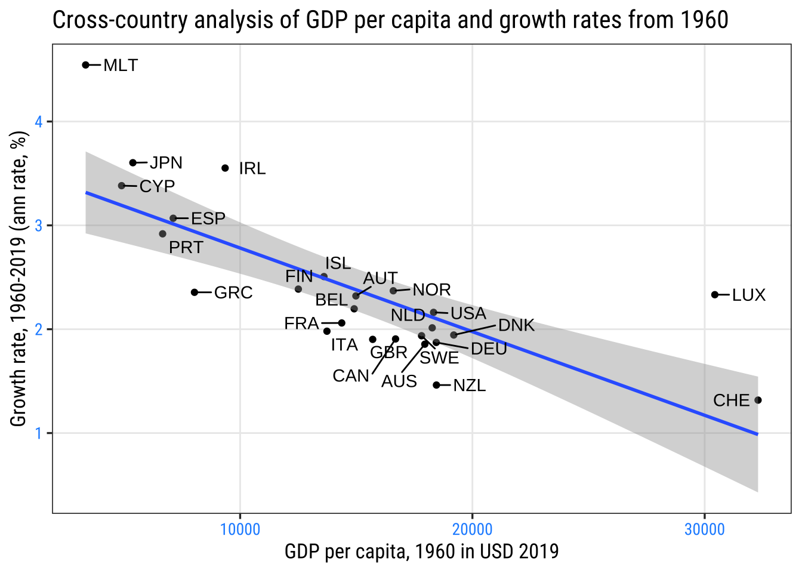
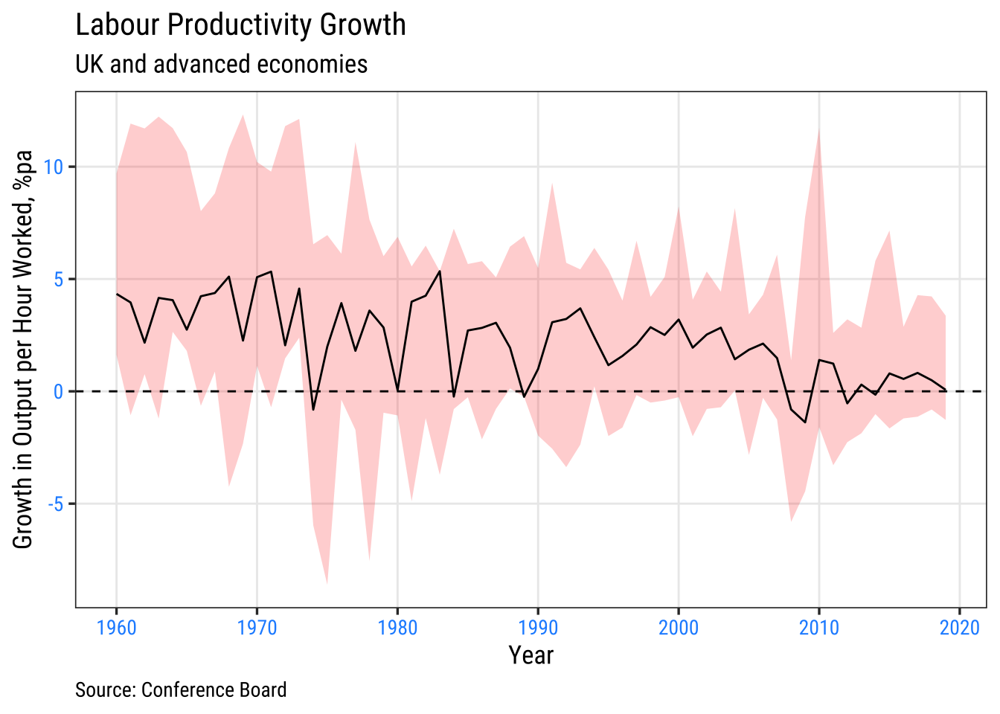
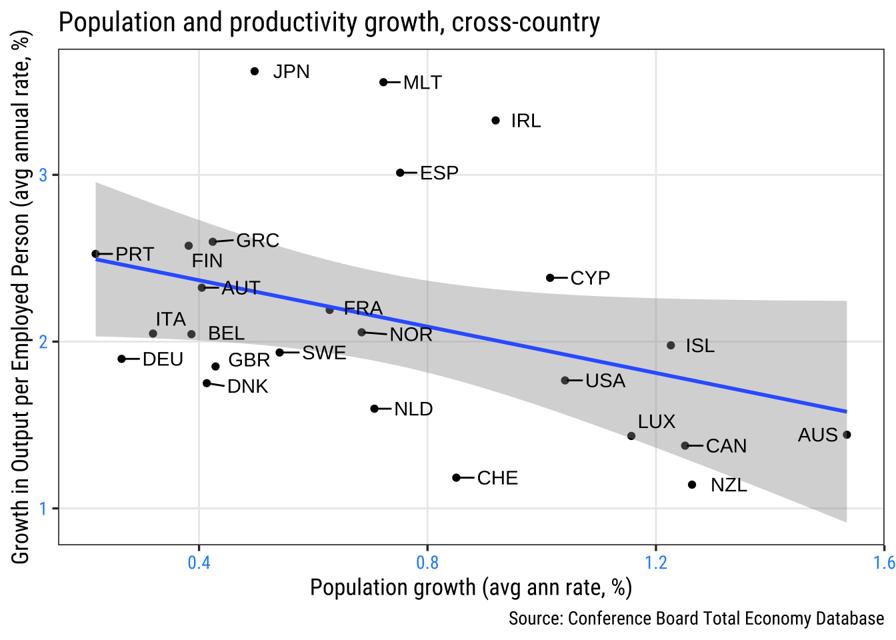
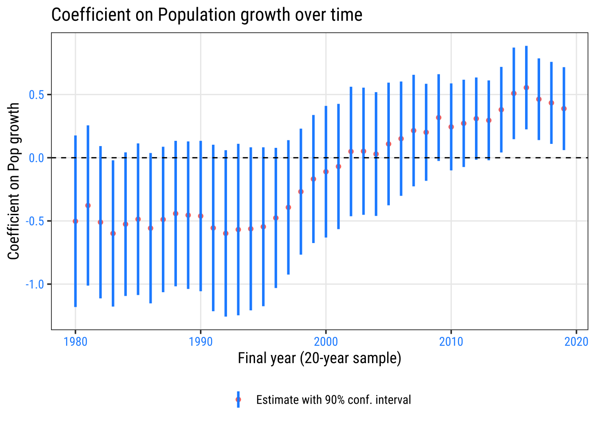
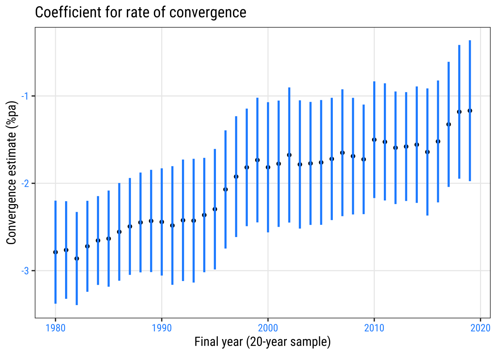
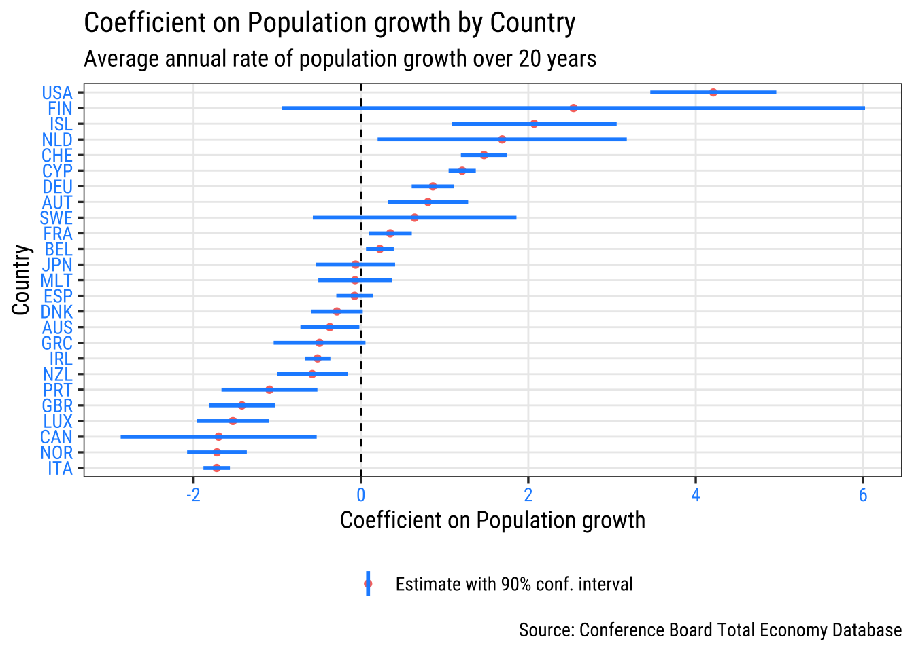
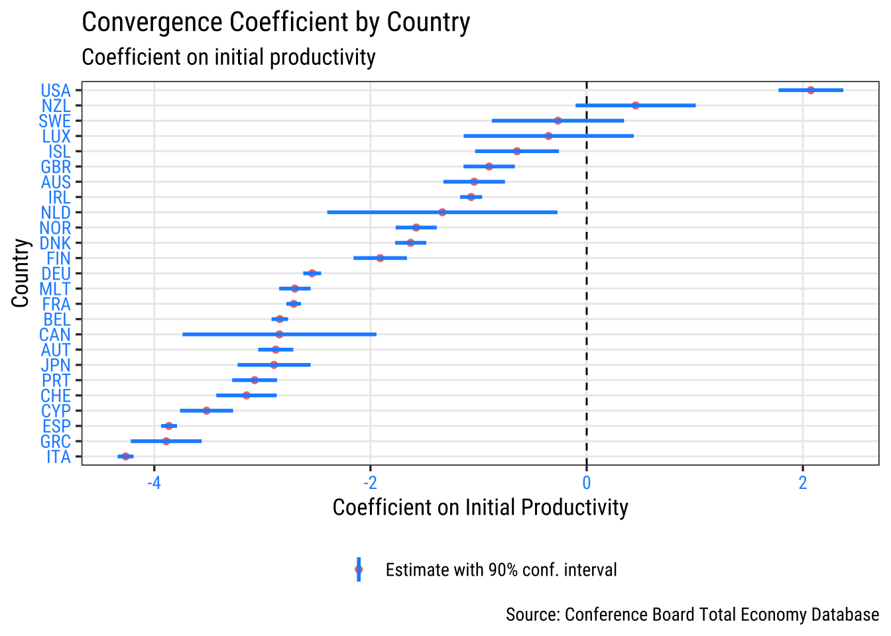

| Economic Indicators by Country | ||||
|---|---|---|---|---|
| Employment, Population, and Growth: 2019 | ||||
| Country | Employment (000s) | Population (000s) | Output per Worker (USD) | GDP Growth (%) |
| Australia | 12,887.2 | 25,250.3 | 104,066.0 | 1.8 |
| Austria | 4,540.5 | 8,935.9 | 114,152.3 | 1.6 |
| Belgium | 4,893.9 | 11,473.6 | 125,957.7 | 1.4 |
| Canada | 19,432.2 | 37,670.0 | 98,579.0 | 1.6 |
| Switzerland | 5,092.5 | 8,730.7 | 119,838.8 | 0.9 |
| Cyprus | 436.9 | 1,035.0 | 82,564.7 | 3.2 |
| Germany | 45,236.0 | 84,338.9 | 102,748.6 | 0.6 |
| Denmark | 2,998.1 | 5,823.0 | 116,119.0 | 2.3 |
| Spain | 20,230.8 | 47,580.6 | 99,598.9 | 2.0 |
| Finland | 2,669.4 | 5,523.2 | 104,020.0 | 1.1 |
| France | 28,455.0 | 67,168.2 | 112,997.3 | 1.5 |
| United Kingdom | 32,798.8 | 67,154.0 | 97,749.6 | 1.5 |
| Greece | 4,301.3 | 10,637.3 | 78,460.4 | 1.9 |
| Ireland | 2,275.8 | 4,915.8 | 158,400.5 | 5.5 |
| Iceland | 202.9 | 357.6 | 103,373.1 | 1.9 |
| Italy | 25,499.7 | 60,321.5 | 103,368.6 | 0.3 |
| Japan | 69,250.8 | 125,544.3 | 78,761.7 | 0.9 |
| Luxembourg | 465.1 | 621.6 | 158,553.1 | 2.3 |
| Malta | 249.2 | 498.4 | 92,189.1 | 4.7 |
| Netherlands | 9,576.0 | 17,312.4 | 107,058.4 | 1.7 |
| Norway | 2,838.0 | 5,349.3 | 124,569.8 | 1.2 |
| New Zealand | 2,590.8 | 4,944.7 | 82,927.7 | 2.3 |
| Portugal | 4,952.3 | 10,207.0 | 74,964.5 | 2.2 |
| Sweden | 5,128.3 | 10,289.5 | 110,844.0 | 1.2 |
| United States | 159,202.8 | 330,942.4 | 134,593.7 | 2.5 |
| Source: Conference Board Total Economy Database | ||||
Labour Productivity: Some cross-country features
Introduction
Some simple cross-country analysis of labour productivity using the Conference Board’s Total Economy Database. The analysis mostly consists of cross-country plots.
Some of these plots were used in Benito and Young (2025), ‘The UK productivity shortfall in an era of rising labour supply’, National Institute Economic Review.
Some simple cross-country features
A cross-country summary of some of the key variables in the Conference Board’s Total Economy Database, for 2019.
A standard illustration of (‘beta’) convergence compares the growth rate in GDP with (log) GDP per capita in an earlier period. In a regression of the annual GDP growth rate on log GDP per capita in 1960 using these data, the coefficient on log GDP per capita is -1.18 (st.error = 0.134) indicating some convergence, at an annual rate of 1.2% pa on this measure.
[1] "Regression of GDP growth on log GDP per capita in 1960"# A tibble: 2 × 5
term estimate std.error statistic p.value
<chr> <dbl> <dbl> <dbl> <dbl>
1 (Intercept) 13.6 1.27 10.7 2.15e-10
2 lngdppc1960 -1.18 0.134 -8.81 7.87e- 9A related plot to that regression result is shown below.

The (international) productivity slowdown
A slowdown in productivity growth was a key feature of the 1970s and of the post-Global Financial Crisis (GFC) period from 2007/08. Within that cross-country experience, the decline in UK productivity growth since the GFC is especially pronounced .

Labour productivity growth and population growth
A raw correlation between growth in output per employed person and population growth. Countries with higher population growth have tended, on average, to experience lower growth in output per employed person.

Some added empirics
varying over time
We exploit the cross-country variation in the data by regressing country-level average productivity growth (in a 20-year window) on its population growth and the initial level of productivity which allows for convergence effects. The higher the initial level of labour productivity (20-years earlier), the weaker should be expected productivity growth. This involves estimating:
\[\Delta log(Y/L)_{i,t} = \alpha_{0,t} + \alpha_{1,t}log(Y/L)_{i0} + \alpha_{2,t}\Delta Pop_{i,t} + \epsilon_{i,t} \tag{1}\]
where ‘i’ indexes countries, ‘i’ = 1, 2…, 25, and ‘t’ indexes years, t = 1980, 1981…, 2019. We exploit this variation in 40 years of data on labour productivity growth across 25 countries
That association is considered a little more formally in the following rolling regression (see Benito and Young, 2025). A first result is to show that, across the set of countries, the negative association between productivity and population growth applied up until the mid-1990s, but weakened significantly thereafter.

Has the association between productivity and population growth varied across countries? The following suggests quite significantly so. Over the full 1960-2019 period, the UK is one of the countries with a significantly inverse association between these two features. By contrast, the US stands out for having a positive association between productivity and population growth.
That we find cross-country evidence that higher productivity growth countries tended to have higher population growth by the end of the period might have posed a puzzle for understanding UK experience. Our finding that the UK has in general been in a minority of countries with a more negative relation between its productivity growth and population growth may help account for some of this.

varying by country
What of the UK’s estimated convergence speed? Our results summarised by the range of country-level coefficients indicate that the UK witnessed a more modest pace of convergence, estimated at 0.90% p.a. (standard error = 0.14). This may also be a factor that has weighed on UK productivity growth. Our data do not realistically allow us to explore how these links evolved separately for each country and over time.


Conclusions
Our cross-country evidence together with our assessment of UK-specific performance suggests: (i) Over time, and across countries in general, the tendency for population growth to weigh on productivity growth that was evident in the 1980s and 1990s has since weakened. (ii) Yet, the UK has had a stronger tendency than most advanced economies for population growth to go hand in hand with weaker productivity growth; (iii) a slower pace of cross-country convergence followed the financial crisis and may have slowed productivity growth; and (iv) slower convergence also applies in the UK, in a feature could have owed to impaired capital markets slowing adjustment of its capital stock to an increase in its labour force.
The natural explanation for these findings is that there is no general relationship between a country’s productivity and population growth, as would be consistent with long-run theory. But in the medium term, the relationship will depend on the causes and nature of population change. Countries at the technological frontier that have a high demand for labour that is met partly from highly-skilled workers from the rest of the world are likely to see faster productivity growth than countries that experience a positive labour supply shock that is accommodated by slow wage and productivity growth.